Il menu
La verace pizza napoletana nel forno a legna, i fritti, la cucina e il mare.
Da bere
Acqua naturale
1 l
Acqua frizzante
1 l
Coca-Cola
Bottiglia 33 cl
Coca-Cola Zero
Bottiglia 33 cl
Aranciata
Bottiglia 33 cl
Sprite
Bottiglia 33 cl
Birra chiara alla spina
20 cl / 40 cl
Birra rossa alla spina
20 cl / 40 cl
Birrasalento Agricola
Birra artigianale, 33 cl
Birrasalento Agricola ambrata
Birra artigianale, 33 cl
Birrasalento Pizzica
Birra artigianale, 33 cl
Birrasalento Taranta
Birra artigianale, 75 cl
Birrasalento Beggia ambrata
Birra artigianale, 75 cl
Vino bianco alla mescita
¼ l / ½ l / 1 l
Falanghina D.O.P. Astroni
Bottiglia 75 cl
Falanghina della casa
Bottiglia 75 cl
Fiano di Avellino Taburno
Bottiglia 75 cl
Biancolella Casa D’Ambra
Bottiglia 75 cl
Greco di Tufo
Bottiglia 75 cl
Moio 57
Bottiglia 75 cl
Gragnano Ottouve
Bottiglia 75 cl
Antipasti
Il tagliere ideale per 4 persone
Degustazione di salumi e formaggi selezionati, accompagnati da confetture e focaccia calda
La regina
Mozzarella di bufala campana DOP da 500 g e pomodoro datterino
Picea ideale per 2 persone
Mozzarella, prosciutto, salame, caciotta, ricotta, olive, contorni e focaccia
Picea mare ideale per 2 persone
Composto da vari sfizi di mare
Prosciutto e mozzarella
Prosciutto crudo di Parma e mozzarella di bufala campana DOP
Classici & fritti
Bruschette al pomodoro fresco
Frittatina
Crocchè
Arancini
Zeppoline
Patate fritte dippers
Patate fritte dippers con würstel
Verdurine
Frittura Italia
Montanarine
Mozzarella in carrozza
Tris degustazione
Frittatina, crocchè di patate e montanara
Mini ripieni mix
Degustazione di piccoli ripieni fritti farciti
Pizze classiche
“L’arte tradizionale dei pizzaiuoli napoletani” è patrimonio culturale immateriale dell’umanità.
Marinara
Pomodoro San Marzano DOP, aglio di Sulmona, origano e basilico
Margherita
Pomodoro San Marzano DOP, fior di latte di Agerola e basilico
Margherita bianca
Fior di latte di Agerola e basilico
Filetto
Pomodorini, fior di latte di Agerola e basilico
Margherita al prosciutto
Pomodoro San Marzano DOP, fior di latte di Agerola, prosciutto cotto e basilico
Margherita ai funghi
Pomodoro San Marzano DOP, fior di latte di Agerola, funghi e basilico
Margherita prosciutto e funghi
Pomodoro San Marzano DOP, fior di latte di Agerola, prosciutto cotto, funghi e basilico
Margherita al salame
Pomodoro San Marzano DOP, fior di latte di Agerola, salame e basilico
Diavola
Pomodoro San Marzano DOP, fior di latte di Agerola, salame piccante e basilico
Capricciosa
Pomodoro San Marzano DOP, fior di latte di Agerola, salame, funghi, prosciutto cotto, carciofini, olive e basilico
Ripieno
Pomodoro San Marzano DOP, fior di latte di Agerola, ricotta di bufala, prosciutto cotto, salame e basilico
Ripieno fritto
Pomodoro San Marzano DOP, fior di latte di Agerola, ricotta di bufala, provola di Agerola e salame
Baby
Fior di latte di Agerola, würstel, patate fritte e basilico
Chef
Fior di latte di Agerola, panna, prosciutto cotto, mais e basilico
Pagnottiello al forno
Prosciutto crudo di Parma Doppia Corona, provola di Agerola, rucola e pomodori
Pizza crocchè
Panna, prosciutto cotto, fior di latte di Agerola, crocchè di patate
Siciliana
Pomodoro San Marzano DOP, provola di Agerola, melanzane a funghetto e basilico
Caprese
Focaccia, pomodori, mozzarella di bufala DOP, provola di Agerola, origano e basilico
Panna e prosciutto
Fior di latte di Agerola, panna, prosciutto cotto e basilico
Panna, prosciutto e funghi
Fior di latte di Agerola, panna, prosciutto cotto, funghi e basilico
Primavera
Fior di latte di Agerola, prosciutto crudo di Parma Doppia Corona, rucola e Parmigiano Reggiano 24 mesi
Ortolana
Pomodoro San Marzano DOP, fior di latte di Agerola, peperoni, melanzane a funghetto, zucchine e basilico
Margherita con ricotta
Pomodoro San Marzano DOP, fior di latte di Agerola, ricotta di bufala e basilico
Quattro formaggi
Fior di latte di Agerola, provola di Agerola, sottiletta, gorgonzola
Quattro stagioni
¼ con prosciutto, ¼ con salame, ¼ con funghi, ¼ margherita
Olio e pomodoro
Pomodoro San Marzano DOP, olio e basilico
Tonnata
Pomodorini gialli del Vesuvio, fior di latte di Agerola, filetto di tonno di Cetara, cipolla, olive taggiasche e basilico
Frutti di mare
Pomodoro San Marzano DOP, aglio di Sulmona, origano, frutti di mare e basilico
Pescatora
Fior di latte di Agerola, polpo, calamaro, gamberetti e rucola
Pizze speciali
Picea ideale per 2 persone
Doppio impasto farcito con pomodoro San Marzano DOP, fior di latte di Agerola, ricotta di bufala, melanzane a funghetto e, all’uscita, pomodorini, rucola e Parmigiano Reggiano 24 mesi
Pulcinella
Fior di latte di Agerola, salsiccia di maialino nero di Caserta e friarielli novantini
Mix formaggi
Specialità del pizzaiolo con selezione di formaggi italiani
D.O.C.
Pomodorini, mozzarella di bufala DOP e basilico
D.O.P.
Pomodori del Piennolo DOP, mozzarella di bufala DOP e basilico
Duetto
½ D.O.C., ½ fior di latte di Agerola, bresaola, rucola e Parmigiano Reggiano 24 mesi
Lasagna
Pomodoro San Marzano DOP, fior di latte di Agerola, provola di Agerola, ricotta di bufala, prosciutto cotto, salame, uova e basilico
Parmigiana
Pomodoro San Marzano DOP, fior di latte di Agerola, parmigiana di melanzane e basilico
4 gusti
¼ prosciutto e funghi, ¼ quattro formaggi, ¼ primavera e ¼ D.O.C.
Sfiziosa
Fior di latte di Agerola, crema ai formaggi, bacon affumicato, chips di cipolla e basilico
Le firme di Picea
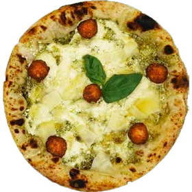
Polpettina
Fior di latte di Agerola, pesto di basilico, ricotta di bufala, polpettine di manzo, provolone del Monaco, olio EVO e basilico
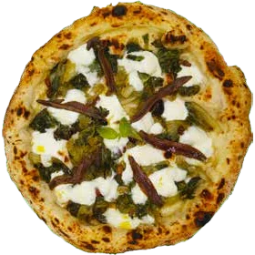
Della nonna
Provola di Agerola, scarola ripassata in padella con olive, uvetta passa e capperi, acciughe di Cetara, olio EVO e basilico
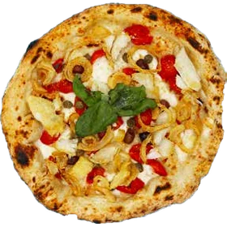
Portoghese
Fior di latte di Agerola, pomodoro del Piennolo DOP, baccalà, olive, capperi, chips di cipolla, olio EVO e basilico
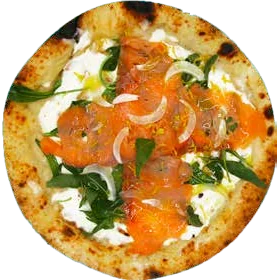
Mediterranea
Focaccia condita all’uscita con squacquerone, rucola, salmone affumicato, cipolla novella, scorzetta di limone, olio EVO e basilico
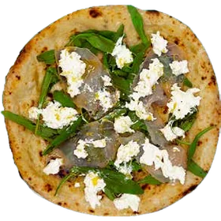
Marlin
Focaccia condita all’uscita con stracciata di bufala, rucola, pesce spada marlin affumicato, scorzetta di limone, olio EVO e basilico
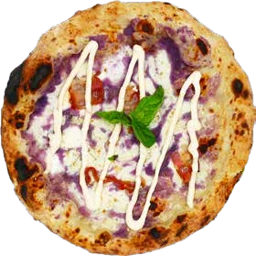
Specials
Provola di Agerola, purea di patate viola Bayard, pancetta affumicata, crema ai formaggi, olio EVO e basilico
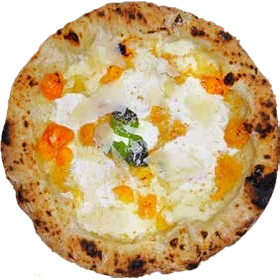
D.O.P.G.
Pomodori gialli del Piennolo, mozzarella di bufala DOP, Parmigiano Reggiano 24 mesi, olio EVO e basilico
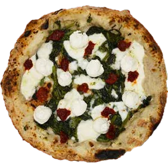
Spilinga
Friarielli novantini, provola di Agerola, spuma di ricotta, ’nduja di Spilinga, olio EVO e basilico
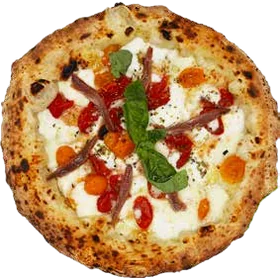
Vivara
Mozzarella di bufala DOP, pomodoro datterino giallo e rosso, alici di Cetara, origano, olio EVO e basilico
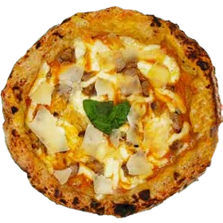
Farms
Provola di Agerola, vellutata di zucca, salsiccia di maialino nero casertano, provolone del Monaco, olio EVO e basilico
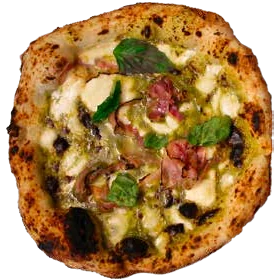
Bronte
Provola di Agerola, pesto di pistacchi, pancetta al pepe nero, olio EVO e basilico
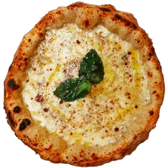
Cacio & pepe
Fior di latte di Agerola, pecorino romano, pepe nero, olio EVO e basilico
Sfizi di mare
Fritto di gamberi e calamari
Fritto di calamari
Impepata di cozze
Calamaro alla brace
Gamberoni alla brace
Insalata di mare
Polpo all’insalata
Pesce spada alla brace
Primi piatti
Vermicelli cozze e limone
Cozze, crema di limone e menta
Gnocchi capresi
Pomodorini datterini, Parmigiano Reggiano e basilico fresco
Spaghetti alla Nerano
Zucchine, provolone del Monaco
Ravioli tartufo e gamberi
Crema di tartufo e gamberi
Secondi piatti
Serviti con contorno a scelta
Bistecca di manzo arrostita
Tagliata di manzo ai ferri
Rucola e Parmigiano Reggiano 24 mesi
Cotoletta
Scamorza alla piastra
Salsicce
Hamburger di manzo
Scaloppina
Petto di pollo ai ferri
Contorni
Funghi trifolati
Peperoni in padella
Friarielli
Melanzane a funghetto
Parmigiana di melanzane
Insalata di pomodori
Insalata mista
Insalata verde
Misto contorni
Verdure grigliate
Insalatone
Picea
Insalata riccia, rucola, filettoni di tonno, mozzarella e pomodorini
Primavera
Lattuga, rucola, radicchio, pomodori, mais, Parmigiano Reggiano 24 mesi e olive
Caprese
Lattuga, mozzarella di bufala, provola, pomodori, Parmigiano Reggiano 24 mesi e olive
Carubana
Insalata mista, finocchi, ravanelli, sedano, fagiolini, carote e cetrioli
Tricolore
Bresaola, rucola, scaglie di Parmigiano Reggiano 24 mesi
Marinara
Pesce spada affumicato, rucola e Parmigiano Reggiano 24 mesi
Del borgo
Insalata mista, filetto di tonno, polpo e olive
Del campo
Lattuga, radicchio, pomodorini, pollo grigliato, noci di Benevento, livetta e scaglie di Parmigiano Reggiano 24 mesi
Caesar salad
Incappucciata, pollo alla piastra, pancetta affumicata, pane fritto, salsa Caesar, Parmigiano Reggiano 24 mesi
Per concludere
Frutta di stagione
Dolci del giorno
Pizza con Nutella
Caffè
Grappa
Limoncello
Amaro
Segnalaci eventuali allergie o intolleranze: il personale è a tua disposizione e ti indica gli allergeni presenti in ogni piatto (Reg. UE 1169/2011).
Grazie per averci scelto